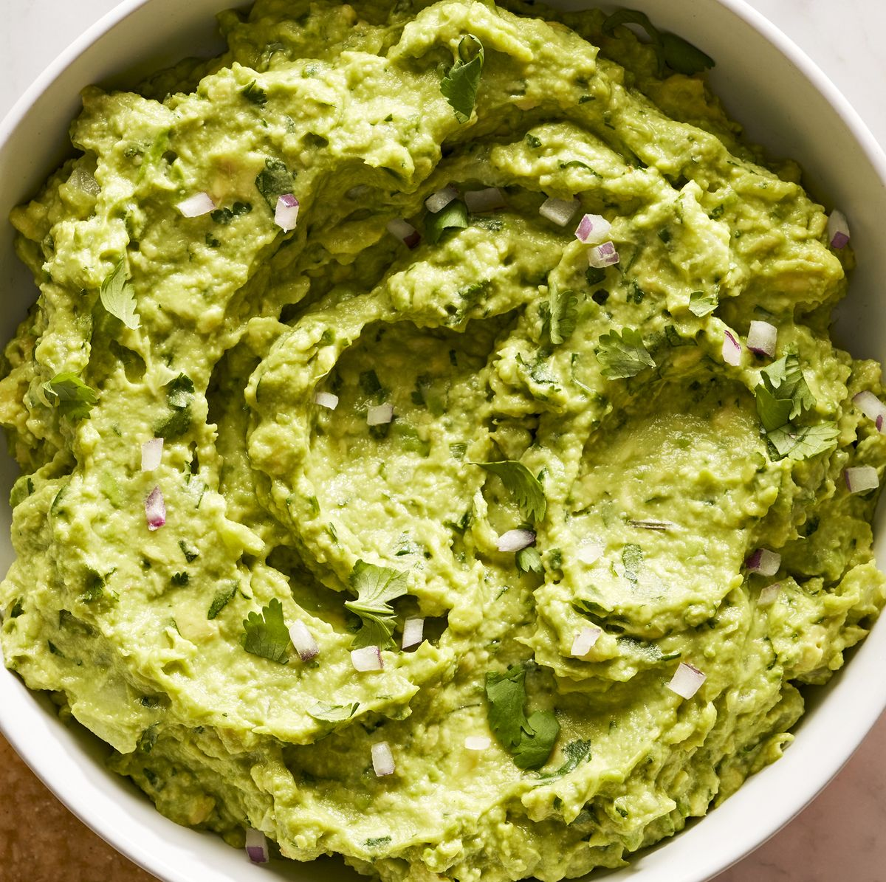

Guacamole

Description
My own homemade guacamole!
Ingredients
- Avocados
- Olive oil
- Lemon juice
- Red onion
- Salt
- Pepper
Steps
- Mash avocado in a bowl with a fork.
- Mince onion, and add to avocado with the rest of the ingredients.
- Mix, and add extra of each to taste.
- Enjoy!